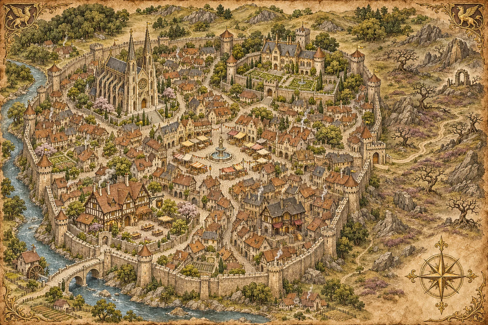

<div id="okh-map-study">
  <section class="om-journal" aria-label="奥克赫斯手绘勘界地图">
    <header class="om-header"><span class="om-kicker">OAKHAVEN CHRONICLES · FOLIO XVI</span><h2>奥克赫斯 · 城镇与荒原</h2><p>冒险者公会藏图 <span>✦</span> 疆域勘界卷</p></header>
    <div class="om-rule" aria-hidden="true">❖</div>
    <div class="om-topline"><span>⚲ 当前所在：中央集市大道</span><button type="button" class="om-fold" aria-expanded="true" aria-controls="om-map-body">收起图卷 −</button></div>
    <div id="om-map-body">
      <div class="om-map">
        
        <div class="om-markers" aria-label="地图地点"></div>
      </div>
      <div class="om-mobile-picker"><label for="om-place-select">勘界地名</label><select id="om-place-select"></select></div>
      <section class="om-detail" aria-label="选中地点详情" aria-live="polite"><div><div class="om-heading"><span aria-hidden="true">❖</span><h3 id="om-detail-name">中央集市大道</h3><span id="om-detail-state">当前所在</span></div><p id="om-detail-desc">银月珠宝铺近旁。摊棚与街巷环绕着广场，通往城中各处。</p></div><button id="om-prepare" type="button" disabled>已在此处</button></section>
      <footer class="om-footer"><span>公会抄录 · 城镇及近郊</span><span>点击地名，查看地点</span></footer>
    </div>
    <div class="om-intent" hidden><label for="om-draft">行动草稿</label><textarea id="om-draft" rows="2"></textarea><p role="status">已填入草稿，尚未发送。</p></div>
  </section>
</div>
<style>
#okh-map-study{--om-gold:#dfc89a;--om-ivory:#fff5e3;--om-muted:#b3a594;--om-line:#dfc89a35;color-scheme:dark;color:#e8dfd3;font:13px/1.7 -apple-system,BlinkMacSystemFont,"PingFang SC","Microsoft YaHei",sans-serif}
#okh-map-study *{box-sizing:border-box}
#okh-map-study .om-journal{padding:27px 24px 18px;background:radial-gradient(ellipse at 50% 10%,#251c12,#100c09 80%);border:1px solid #dfc89a40;border-radius:3px}
#okh-map-study .om-header{text-align:center}
#okh-map-study .om-kicker{font:10px/1.7 Georgia,serif;letter-spacing:2.5px;color:#ac9876}
#okh-map-study h2{font:500 26px/1.6 "Songti SC",SimSun,serif;letter-spacing:4px;margin:7px 0 4px;color:var(--om-ivory)}
#okh-map-study .om-header p{font:12px/1.6 "Songti SC",SimSun,serif;color:var(--om-muted);letter-spacing:3px;margin:0}
#okh-map-study .om-header p span{font-size:9px;padding:0 10px;color:var(--om-gold)}
#okh-map-study .om-rule{display:flex;align-items:center;gap:14px;margin:17px 0 11px;color:var(--om-gold);font-size:9px}
#okh-map-study .om-rule::before,#okh-map-study .om-rule::after{content:"";flex:1;height:1px;background:linear-gradient(90deg,transparent,#dfc89a70)}
#okh-map-study .om-rule::after{transform:rotate(180deg)}
#okh-map-study button,#okh-map-study textarea,#okh-map-study select{font-family:inherit}
#okh-map-study button{cursor:pointer}
#okh-map-study button:focus-visible,#okh-map-study select:focus-visible,#okh-map-study textarea:focus-visible{outline:2px solid var(--om-gold);outline-offset:3px}
#okh-map-study .om-topline{display:flex;justify-content:space-between;gap:10px;align-items:center;color:var(--om-muted);font-size:11px;margin-bottom:10px}
#okh-map-study .om-fold{background:none;border:0;color:var(--om-gold);font-size:11px;padding:4px 0}
#okh-map-study .om-map{position:relative;isolation:isolate;aspect-ratio:3/2;border-radius:2px;background:#785a35;box-shadow:0 5px 22px #0006}
#okh-map-study .om-art{display:block;width:100%;height:auto;border-radius:2px}
#okh-map-study .om-place{position:absolute;left:var(--x);top:var(--y);transform:translate(-50%,-25%);display:flex;align-items:center;flex-direction:column;min-width:44px;min-height:44px;padding:0;background:none;border:0;color:#e9d0a0;z-index:1}
#okh-map-study .om-pin{font:8px/1.5 Georgia,serif;color:#74502d}
#okh-map-study .om-label{padding:2px 7px 3px;background:linear-gradient(90deg,#f5d5a600,#f5d5a6c7 18%,#f5d5a6c7 82%,#f5d5a600);color:#492b16;font:600 14px/1.6 "Songti SC",SimSun,serif;letter-spacing:1px;white-space:nowrap}
#okh-map-study .om-label small{display:block;font:11px/1.5 "Songti SC",SimSun,serif;letter-spacing:2px;color:#82472d}
#okh-map-study .om-place:hover .om-label,#okh-map-study .om-place[aria-pressed="true"] .om-label{color:#77371e;text-decoration:underline;text-decoration-color:#965f3b88;text-underline-offset:4px}
#okh-map-study .om-detail{display:flex;align-items:center;justify-content:space-between;gap:20px;padding:19px 0 13px;border-bottom:1px solid var(--om-line)}
#okh-map-study .om-heading{display:flex;gap:9px;align-items:center;flex-wrap:wrap}
#okh-map-study .om-heading>span:first-child{font-size:10px;color:var(--om-gold)}
#okh-map-study h3{font:500 17px/1.7 "Songti SC",SimSun,serif;margin:0;color:var(--om-ivory)}
#okh-map-study #om-detail-state{font-size:11px;color:var(--om-muted)}
#okh-map-study #om-detail-desc{font-size:12px;color:var(--om-muted);margin:5px 0 0}
#okh-map-study #om-prepare{border:1px solid #cbb17d80;background:linear-gradient(#b8995f24,#b8995f08);color:var(--om-gold);font-size:12px;border-radius:2px;padding:7px 14px;white-space:nowrap}
#okh-map-study #om-prepare:disabled{opacity:.5;cursor:default}
#okh-map-study .om-footer{display:flex;justify-content:space-between;gap:12px;font:10px/1.6 "Songti SC",SimSun,serif;color:#ad9876;padding-top:10px;letter-spacing:1px}
#okh-map-study .om-mobile-picker{display:none}
#okh-map-study .om-intent{margin-top:16px;padding-top:14px;border-top:1px solid var(--om-line)}
#okh-map-study .om-intent label{display:block;color:var(--om-gold);font-size:12px;margin-bottom:7px}
#okh-map-study .om-intent textarea{display:block;width:100%;padding:10px;border:1px solid var(--om-line);border-radius:2px;background:#080605;color:#e8dfd3;font-size:13px;line-height:1.6;resize:vertical}
#okh-map-study .om-intent p{margin:6px 0 0;color:var(--om-muted);font-size:11px}
#okh-map-study [hidden]{display:none!important}
@media(max-width:520px){#okh-map-study .om-journal{padding:20px 10px 14px}#okh-map-study h2{font-size:20px;letter-spacing:2px}#okh-map-study .om-kicker{font-size:9px;letter-spacing:1.5px}#okh-map-study .om-label{display:none}#okh-map-study .om-place[aria-pressed="true"] .om-pin{border-radius:50%;background:#2b190ce6;display:grid;place-items:center;width:18px;height:18px;border:1px solid #e5c68d99;font-size:10px}#okh-map-study .om-pin{font-size:9px;padding:4px}#okh-map-study .om-mobile-picker{display:flex;gap:12px;align-items:center;margin-top:12px}#okh-map-study .om-mobile-picker label{font:12px/1.5 "Songti SC",SimSun,serif;color:var(--om-gold);flex:none}#okh-map-study .om-mobile-picker select{width:100%;min-width:0;background:#21170d;border:1px solid var(--om-line);color:#e8dfd3;border-radius:2px;padding:7px 9px;font-size:14px}#okh-map-study .om-detail{gap:12px;align-items:flex-start;padding-top:15px}#okh-map-study h3{font-size:16px}#okh-map-study .om-heading{gap:5px}#okh-map-study #om-detail-state{font-size:10px}#okh-map-study #om-prepare{padding:7px 9px}#okh-map-study .om-footer{font-size:10px;letter-spacing:0}}
@media(pointer:coarse){#okh-map-study .om-fold,#okh-map-study #om-prepare,#okh-map-study select{min-height:44px}#okh-map-study .om-intent textarea{font-size:16px}}
</style>
<script>
(() => {
  const root=document.getElementById('okh-map-study');
  const places={
    town:{name:'中央集市大道',x:34,y:58,state:'当前所在',desc:'银月珠宝铺近旁。摊棚与街巷环绕着广场，通往城中各处。'},
    church:{name:'圣辉大教堂',x:22,y:46,state:'城内 · 教堂',desc:'高耸的双塔立于城北，石砌长廊与庭院环绕教堂。'},
    manor:{name:'领主山庄',x:43,y:44,state:'城内 · 山庄',desc:'高墙以内，庄园主楼俯瞰着修剪整齐的庭园。'},
    inn:{name:'断剑与麦酒',x:20,y:69,state:'城内 · 旅店',desc:'河畔街区的木构旅店，门前的庭院可供旅人歇脚。'},
    casino:{name:'地下赌场',x:43,y:69,state:'城内 · 地下入口',desc:'街区深处的一处隐蔽入口，通往地下赌场。'},
    wilds:{name:'城外荒原',x:79,y:57,state:'城外',desc:'城门外的旧道蜿蜒进入岩地，枯木与荒草延伸至远山。'}
  };
  const selector=root.querySelector('#om-place-select'),prepare=root.querySelector('#om-prepare'),body=root.querySelector('#om-map-body'),fold=root.querySelector('.om-fold');
  // 地名、坐标和说明集中在 places 中；新增地点时在此添加记录。
  const markers=root.querySelector('.om-markers');
  for(const [id,place] of Object.entries(places)){
    const button=document.createElement('button');button.type='button';button.className='om-place'+(id==='town'?' om-current':'');button.dataset.place=id;
    button.style.setProperty('--x',place.x+'%');button.style.setProperty('--y',place.y+'%');button.setAttribute('aria-pressed','false');
    const pin=document.createElement('span');pin.className='om-pin';pin.setAttribute('aria-hidden','true');pin.textContent='◆';
    const label=document.createElement('span');label.className='om-label';label.textContent=place.name;
    if(id==='town'){const current=document.createElement('small');current.textContent='你在此处';label.append(current);}
    button.append(pin,label);markers.append(button);
    const option=document.createElement('option');option.value=id;option.textContent=place.name+(id==='town'?' · 当前所在':'');selector.append(option);
  }
  let selected='town';
  function select(id){
    if(!Object.hasOwn(places,id))return;
    selected=id;const place=places[id];
    root.querySelectorAll('[data-place]').forEach(button=>button.setAttribute('aria-pressed',String(button.dataset.place===id)));
    root.querySelector('#om-detail-name').textContent=place.name;
    root.querySelector('#om-detail-state').textContent=place.state;
    root.querySelector('#om-detail-desc').textContent=place.desc;
    selector.value=id;prepare.disabled=id==='town';prepare.textContent=id==='town'?'已在此处':'准备前往 ↗';
  }
  root.querySelectorAll('[data-place]').forEach(button=>button.addEventListener('click',()=>select(button.dataset.place)));
  selector.addEventListener('change',()=>select(selector.value));
  fold.addEventListener('click',()=>{body.hidden=!body.hidden;fold.setAttribute('aria-expanded',String(!body.hidden));fold.textContent=body.hidden?'展开图卷 ＋':'收起图卷 −';});
  prepare.addEventListener('click',()=>{
    if(selected==='town')return;
    root.querySelector('.om-intent').hidden=false;
    const draft=root.querySelector('#om-draft');draft.value='我准备前往'+places[selected].name+'。';draft.dispatchEvent(new Event('input',{bubbles:true}));
  });
  select('town');
})();
</script>
